RetroDir manual
Everything RetroDir can do, one feature at a time. Press F1 inside the app any time for the built-in keyboard reference. This manual covers version v1.0.1.
1. Getting started
Download RetroDir.dmg, open it and drag RetroDir to Applications. The first time you open it, macOS asks you to confirm an app downloaded from the internet; click Open. RetroDir is signed and notarized, so this happens only once.
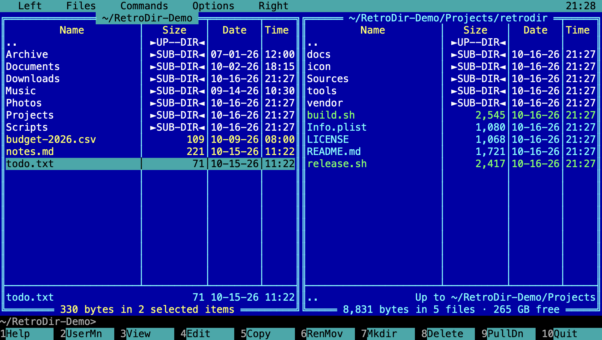
- Two panels. The active panel has the highlighted cursor bar. Most commands act on the active panel, and copy or move into the other one.
- Function keys. The bottom bar shows what F1–F10 do. Hold Shift, Option or Ctrl to see the alternate commands. On a MacBook, hold fn, or use Cmd-1…Cmd-0 as F1…F10 (Cmd-Shift-6 = Shift-F6, Cmd-Option-7 = Alt-F7).
- "Alt" means the Option key throughout RetroDir and this manual.
- The mouse works too. Click to select, double-click to open, right-click to toggle selection, scroll with the wheel, and click the menu bar or the key bar.
2. The panels
Moving around
| Tab | Switch between the left and right panel |
| Enter | Open a folder, run a script, or open a file in its default app |
| Backspace / Cmd-Up | Go to the parent folder (Backspace when the command line is empty) |
| Cmd-Down | Enter a folder or app bundle |
| Cmd-[ | Back to the previous folder |
| Home / End | First / last entry |
| Left / Right | Page up / down (move between columns in brief mode) |
| Ctrl-\ | Go to the root folder |
| Ctrl-U | Swap the two panels |
| Ctrl-= | Show the same folder in the other panel |
| Ctrl-R | Re-read both panels |
Brief and full views
Ctrl-2 shows the full view with size, date and time columns. Ctrl-1 switches to brief view, which lists names only in several columns, so you see more files at once.
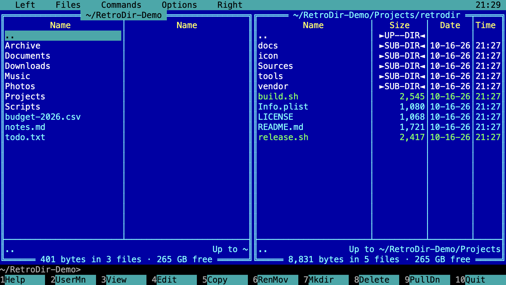
Panel menu and sorting
Press F9 and choose Left or Right for the panel menu. Sort by name, extension, time, size or unsorted with Ctrl-F3…Ctrl-F7; Ctrl-F9 reverses the order. Choosing the current sort again also reverses it.
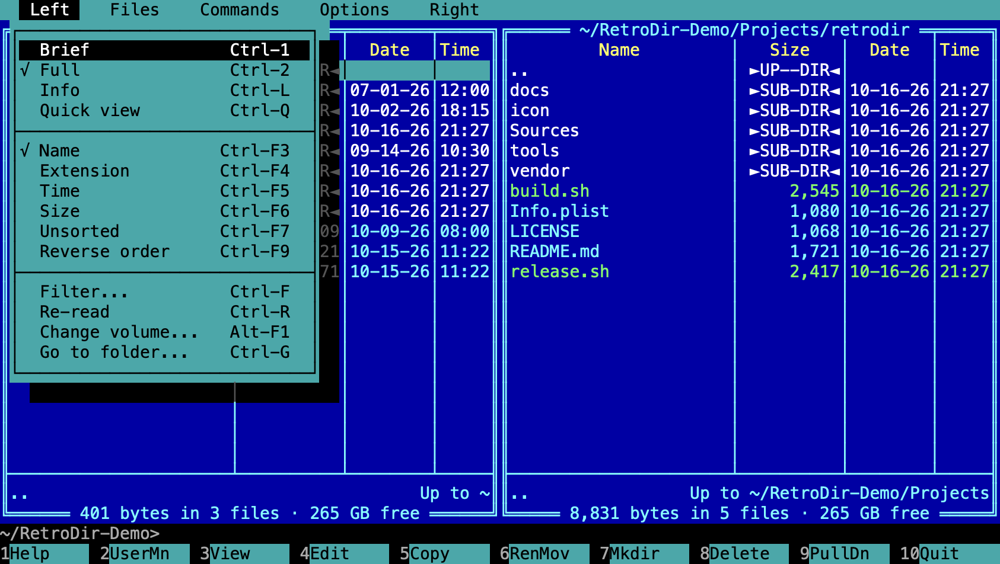
Hidden files
Ctrl-H shows or hides hidden files (names starting with a dot, and files macOS marks hidden). Hidden entries are drawn dimmed.
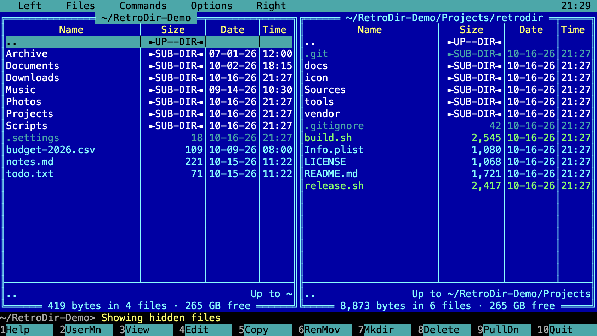
Filter
Ctrl-F limits the panel to files matching one or more masks, for example *.swift,*.md. Choose Clear to show everything again.
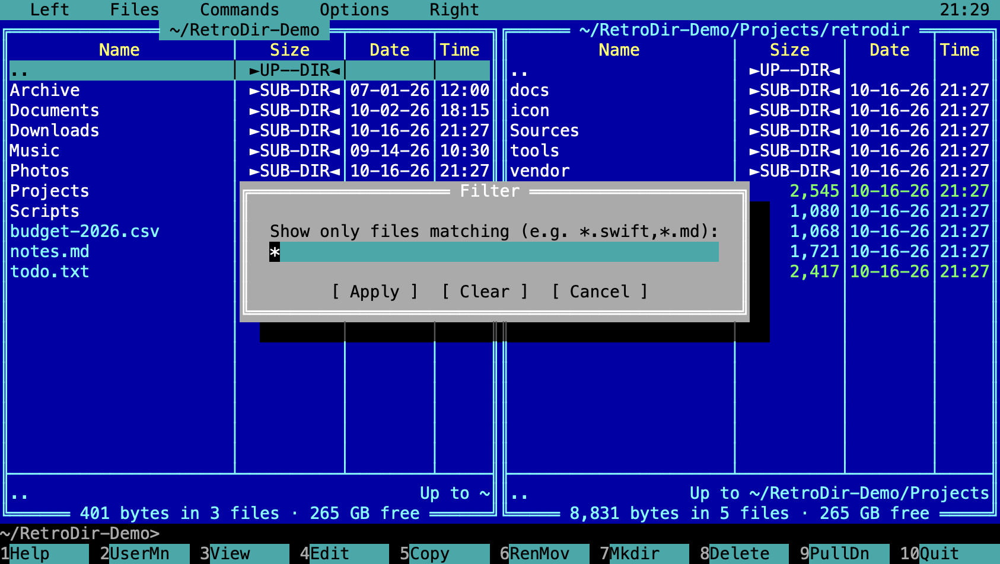
Go to a folder
Ctrl-G jumps to any folder by typing its path. ~, absolute and relative paths all work.
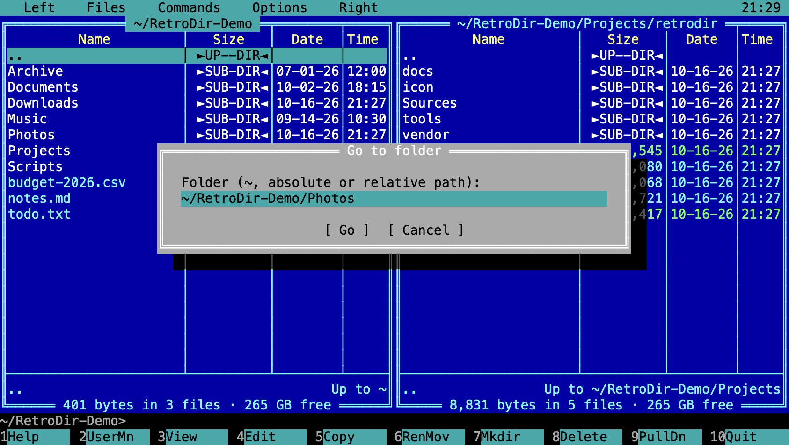
Volumes and places
Alt-F1 (left panel) and Alt-F2 (right panel) list the root folder, your home folder and common places, iCloud Drive, and every mounted volume with its free space.
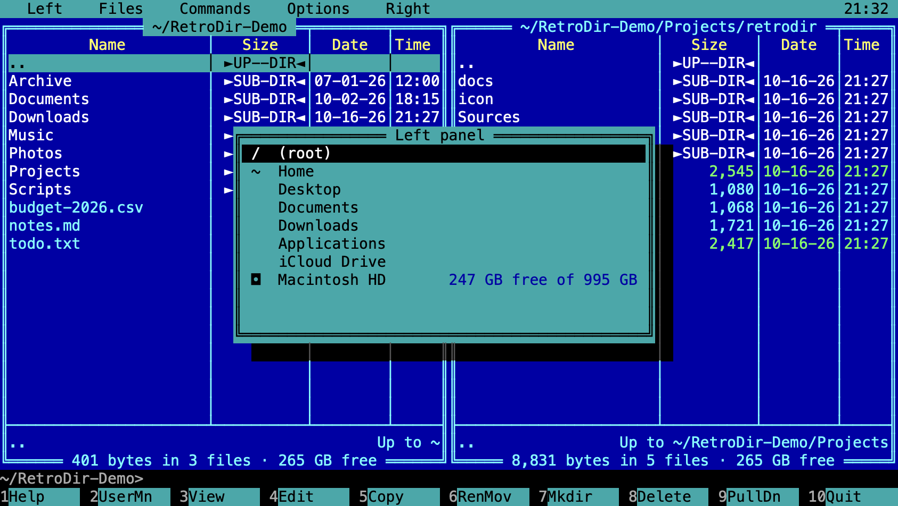
3. Selecting files
Commands act on the selected files, or on the file under the cursor if nothing is selected. Selected files are shown in yellow, and the panel footer totals their size.
| Insert / Space / Shift-Down | Toggle selection and move down |
| + | Select a group by mask |
| - | Unselect a group by mask |
| * | Invert the selection |
| Cmd-A | Select all |
| Esc | Clear the command line, then show the panels, then clear the selection |
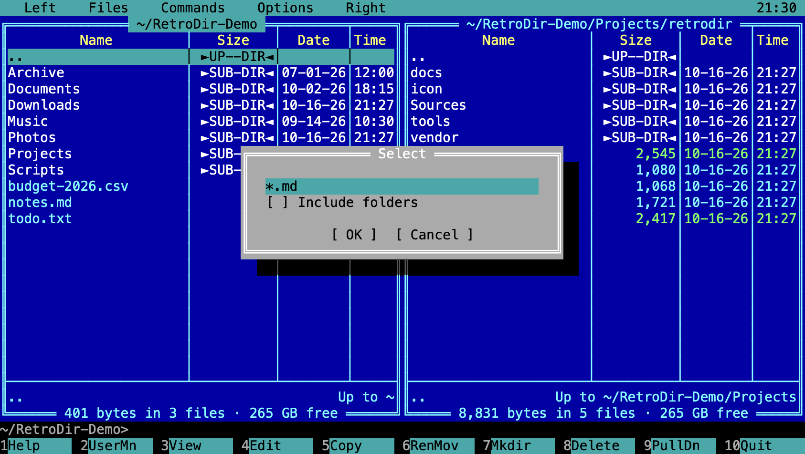
Quick search
Hold Option and type letters, or press Ctrl-S and type, to jump to the first matching name. Ctrl-S again finds the next match.
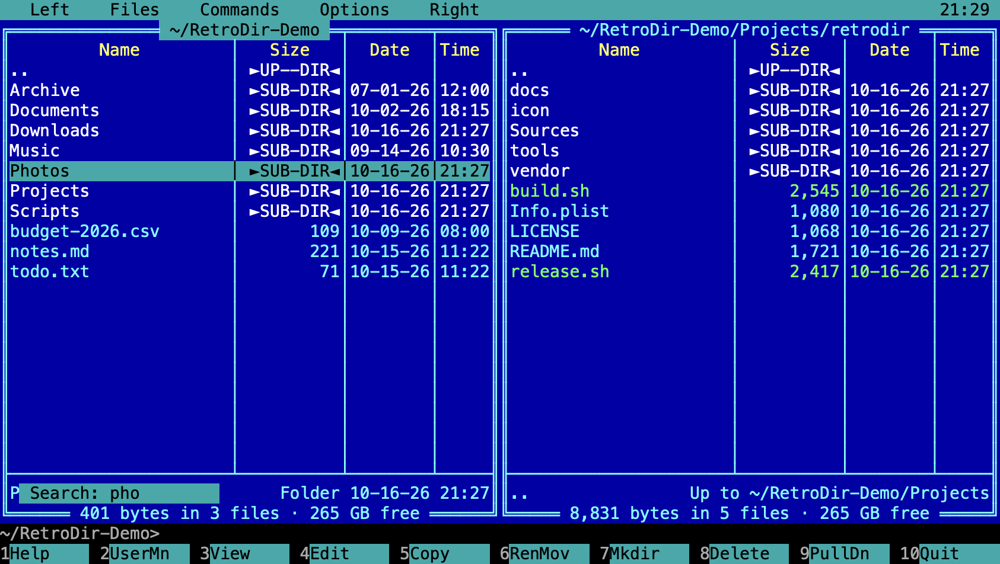
4. File operations
| F5 | Copy to the other panel |
| Shift-F5 | Copy within the same panel (duplicate) |
| F6 | Rename or move to the other panel |
| Shift-F6 | Rename in place |
| F7 | Make a folder (a/b/c creates nested folders) |
| F8 | Move to Trash |
| Shift-F8 | Delete permanently, without the Trash |
| Shift-F4 | Create a new file and open it in the editor |
Copy
The destination defaults to the other panel's folder; you can edit it before confirming. Copies use APFS clones when possible, so even large files copy instantly on the same disk, and they keep permissions, dates, extended attributes and ACLs.
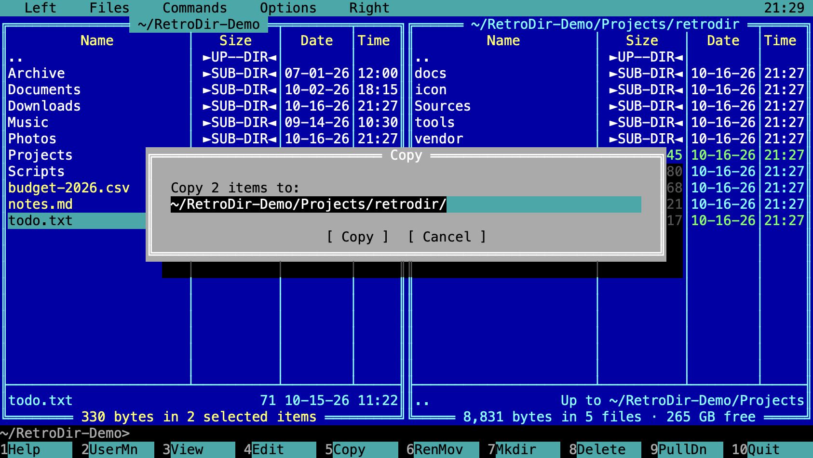
When a file already exists, RetroDir asks what to do: Overwrite, overwrite All, Skip, Skip all, keep the Newer file, or Cancel.
Rename or move
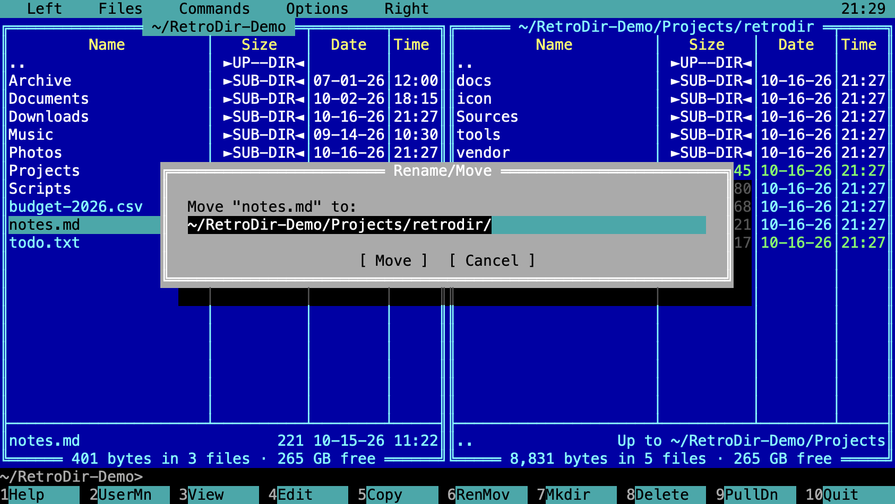
Make folder
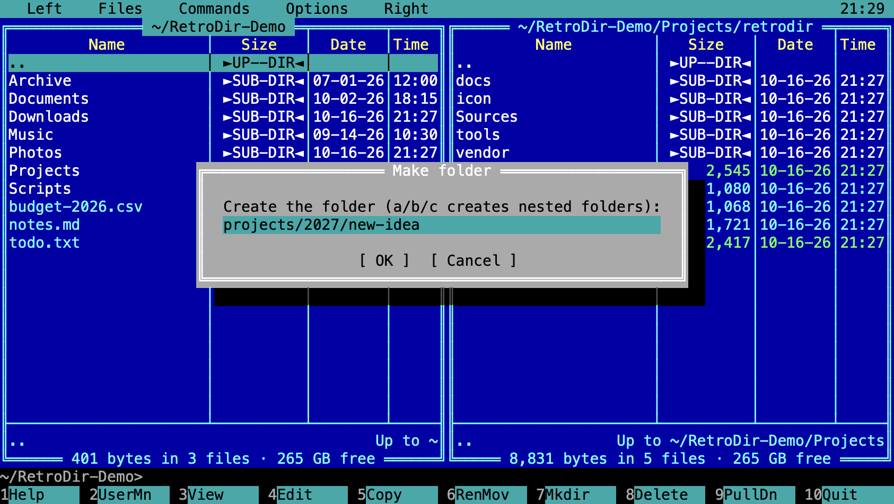
Move to Trash
F8 moves files to the Trash, so you can put them back from Finder. You can turn the confirmation off in Options → Confirm delete.
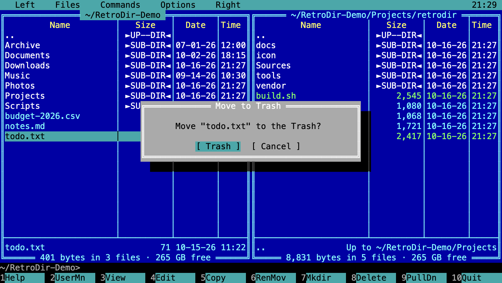
Attributes and symlinks
Files → Attributes… (also in the user menu) changes permissions in octal, hides a file from Finder, and can apply changes to a folder's contents. Files → Symlink in other panel creates a symbolic link to the current file in the other panel.
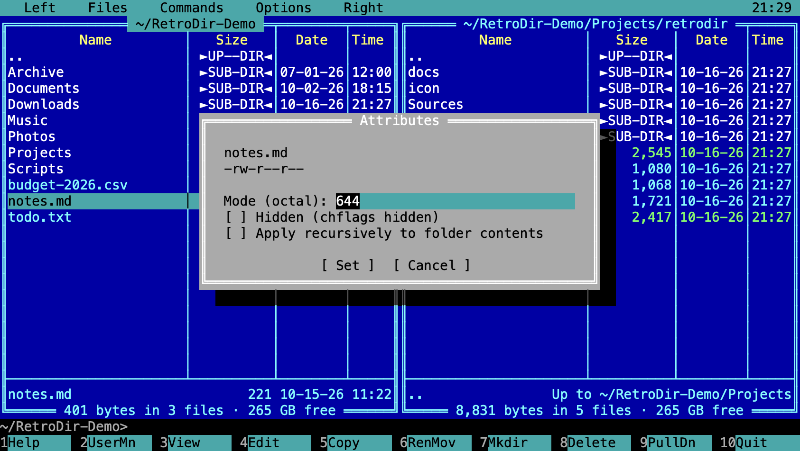
5. Clipboard & Finder
| Cmd-C | Copy the full path(s) of the selection; Finder can also paste them as files |
| Cmd-Option-C | Copy file name(s) only |
| Cmd-V | Paste files copied in Finder into this panel |
| Shift-F3 / Cmd-Y | Quick Look |
| Alt-F4 | Open with the default macOS app |
| Cmd-R | Reveal in Finder |
| Cmd-I | Get Info |
| Ctrl-T | Open Terminal.app in the current folder |
| Drag & drop | Drop files from Finder onto the window to copy or move them |
6. Viewer
F3 opens the file under the cursor in a full-screen viewer. Large files open instantly because they are memory-mapped rather than loaded. Binary files open in hex automatically. On a folder, F3 calculates its size instead (see Folder sizes).

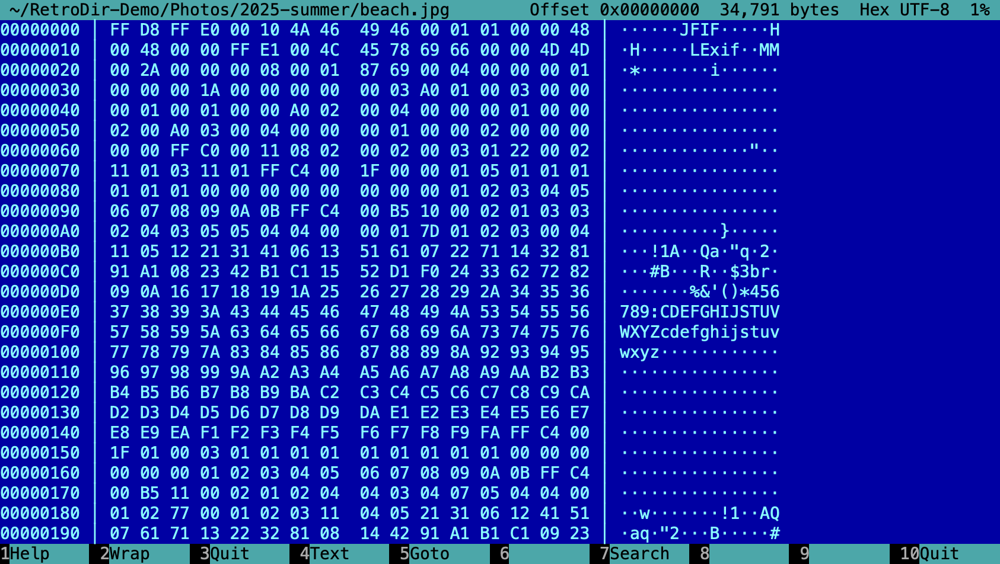
| F2 | Wrap long lines on or off |
| F4 | Switch between text and hex |
| F5 | Go to a line, a byte offset or a percentage |
| F7 | Search; Shift-F7 or n finds the next match |
| Arrows, PgUp, PgDn, Home, End | Scroll |
| Esc / F3 / F10 | Close the viewer |
7. Editor
F4 opens the built-in editor for quick changes without leaving the keyboard. The status line shows the line, column, encoding and line endings. Shift-F4 creates a new file and edits it.

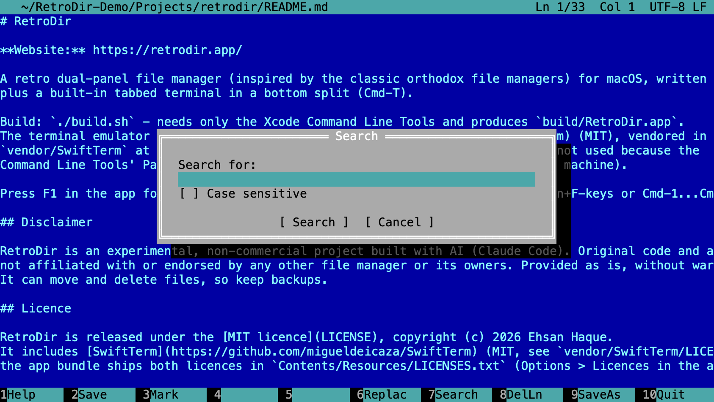
| F2 / Cmd-S | Save; Shift-F2 saves as |
| F7 / Cmd-F | Search; Shift-F7 finds the next match |
| F6 | Search and replace |
| F3 | Start / stop marking a block |
| Shift-arrows | Select text |
| Cmd-C / Cmd-X / Cmd-V | Copy, cut, paste |
| Cmd-Z / Cmd-Shift-Z | Undo / redo |
| F8 / Ctrl-Y | Delete the line |
| Cmd-D | Duplicate the line |
| Tab / Shift-Tab | Indent / unindent |
| Cmd-A | Select all |
| Esc / F10 | Close (asks to save changes) |
8. Info & Quick View
Info panel
Ctrl-L turns the other panel into an Info panel: macOS version and memory, the volume's size and free space with a usage bar, and the current folder's contents and size. Press Ctrl-L again to go back.
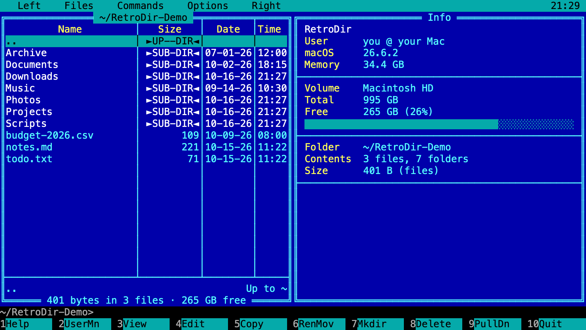
Quick View
Ctrl-Q previews the file under the cursor in the other panel, and follows the cursor as you move. It shows text, hex for binary files, images, and the contents of zip and tar archives.
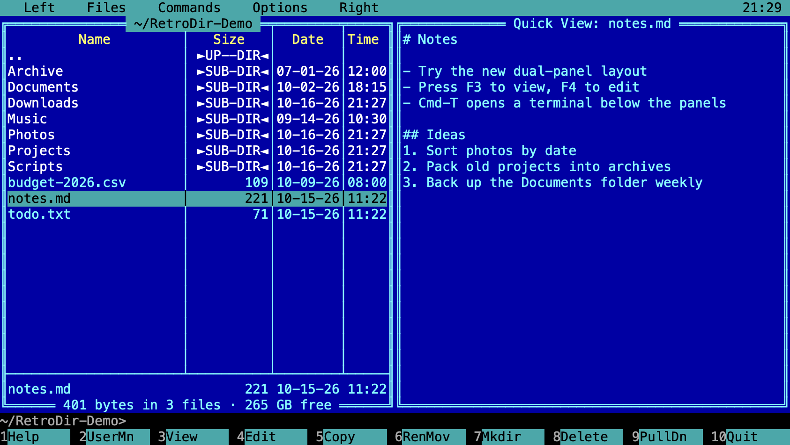

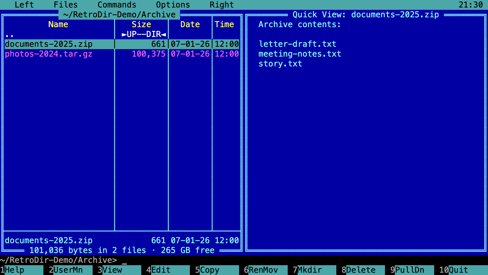
9. Archives
Alt-F5 packs the selected files. The format follows the archive name's extension: .zip, .tar, .tar.gz / .tgz, .tar.bz2 or .tar.xz. Alt-F6 unpacks the archive under the cursor into the other panel's folder.
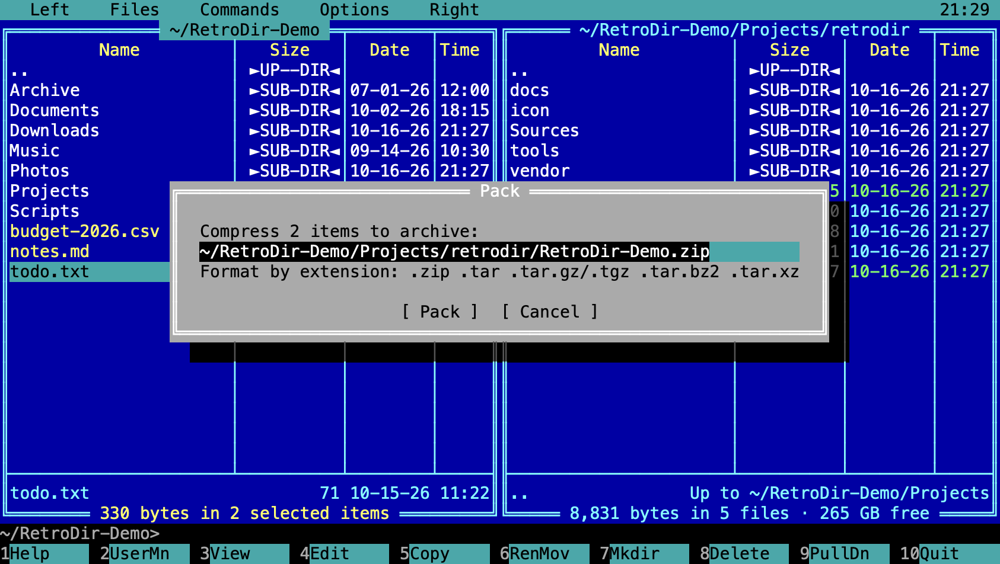
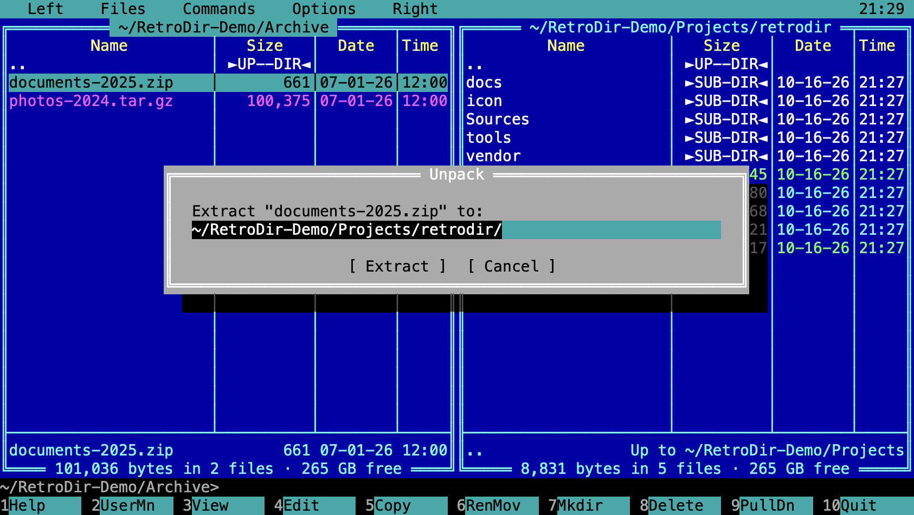
10. Finding & navigating
Find files
Alt-F7 searches the current folder for file names matching a mask, optionally containing some text, with options for subfolders, case sensitivity and hidden files.
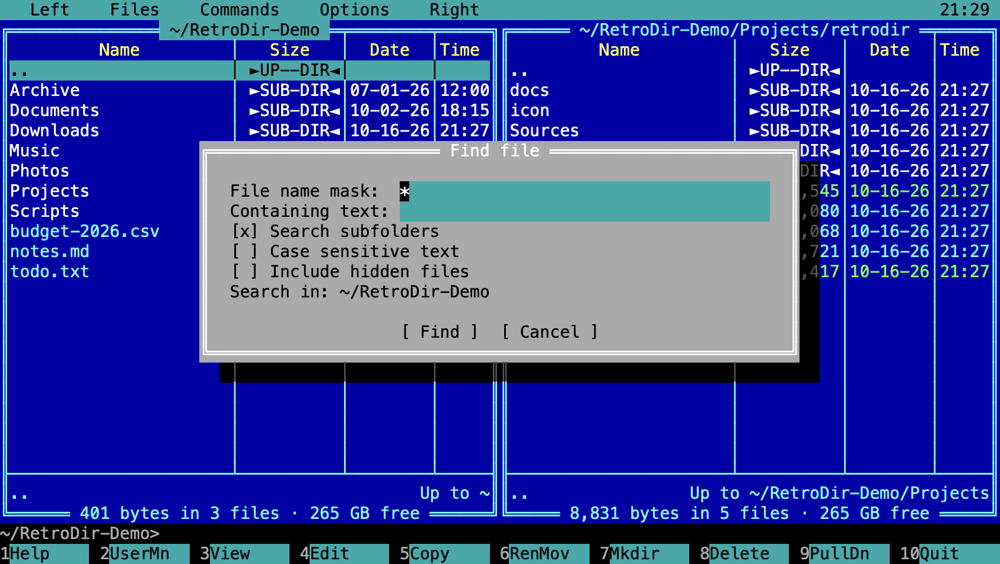
Folder history and hotlist
Alt-F12 lists the folders you've visited recently. Alt-F10 or Ctrl-D opens the folder hotlist, your list of favourite folders: Insert or Cmd-N adds the current folder, Delete removes one, Enter goes there.
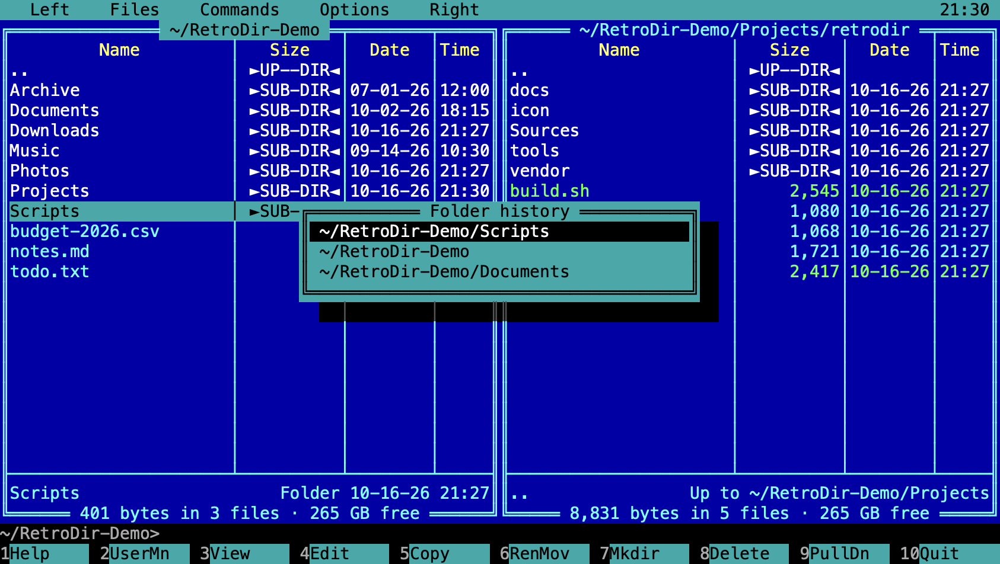
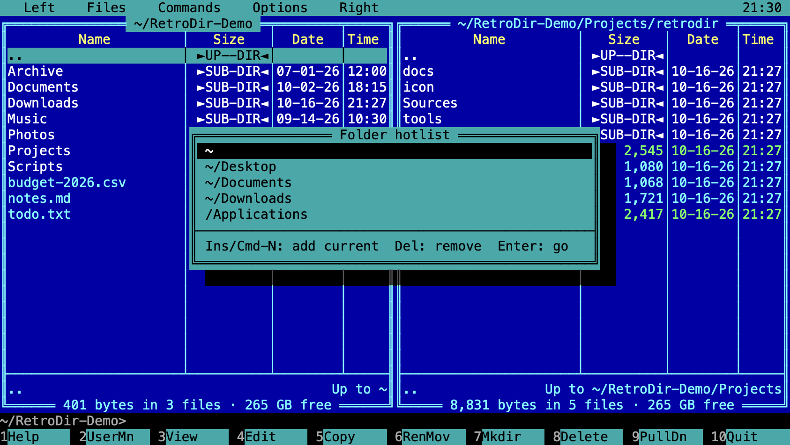
Compare folders
Commands → Compare folders compares the two panels and selects the files on each side that are different or newer, ready to copy across.
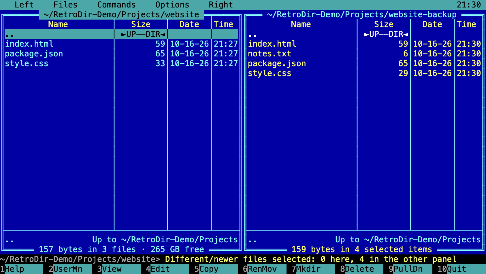
Folder sizes
F3 on a folder calculates its total size and shows it in the size column. Commands → Calculate folder sizes does it for every selected folder.
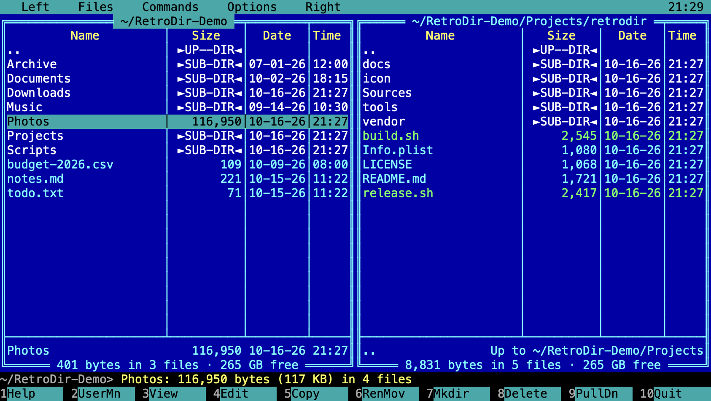
11. Command line & console
Just start typing in the panels: your text goes to the command line, and Enter runs it with zsh in the active panel's folder. The output appears in the console behind the panels. Ctrl-O hides or shows the panels so you can read it. cd changes the panel's folder (cd -, cd ~, cd .. work).
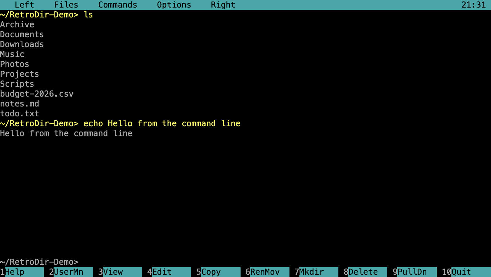
| Ctrl-O | Hide / show the panels to see command output |
| Ctrl-E / Ctrl-X | Previous / next command (also Option-Up / Option-Down) |
| Alt-F8 | Command history |
| Ctrl-Enter | Insert the file name under the cursor |
| Ctrl-[ / Ctrl-] | Insert the left / right panel's path |
| Ctrl-C | Interrupt the running command |
| PgUp / PgDn | Scroll the console while the panels are hidden |
cls | Clear the console |
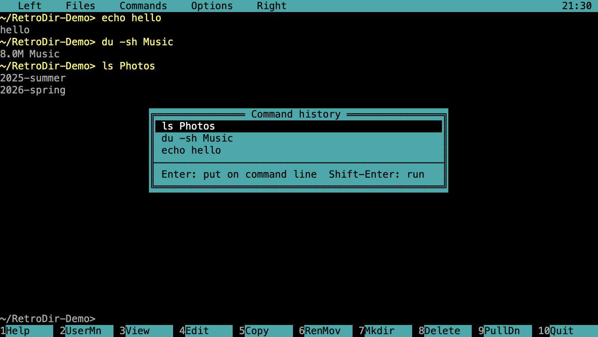
Interactive programs such as vim, top and ssh need a real terminal. Use the built-in terminal for those.
12. Built-in terminal
Cmd-T splits the window: both panels stay on top and a full terminal opens underneath. Each tab runs your login shell, so ~/.zprofile, ~/.zshrc, Homebrew paths, ~/.ssh and ssh-agent all work. It's full xterm-256color emulation: vim, htop, ssh, tmux, mouse support and true colour.

Tabs and working folders
Each tab keeps its own working folder. Browsing in the panels never moves a shell. When you press Cmd-T from a panel, RetroDir switches to a tab that's already in that panel's folder, or opens a new tab there, so a shell that's busy with something else (an ssh session, an editor) is never touched. With the terminal focused, Cmd-T opens a new tab in the current tab's folder.
To sync on purpose: Cmd-Shift-D moves the current shell to the active panel's folder, and Cmd-Shift-P moves the active panel to the shell's folder.
Renaming tabs
Tabs are named after the shell and its folder. To give a tab your own name, press Cmd-Shift-R or double-click the tab. Reset goes back to the automatic name.
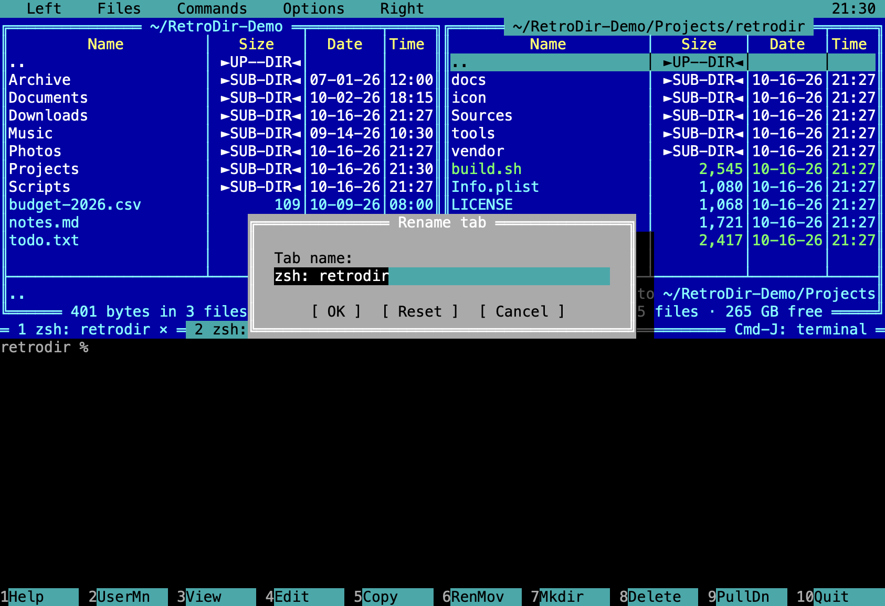
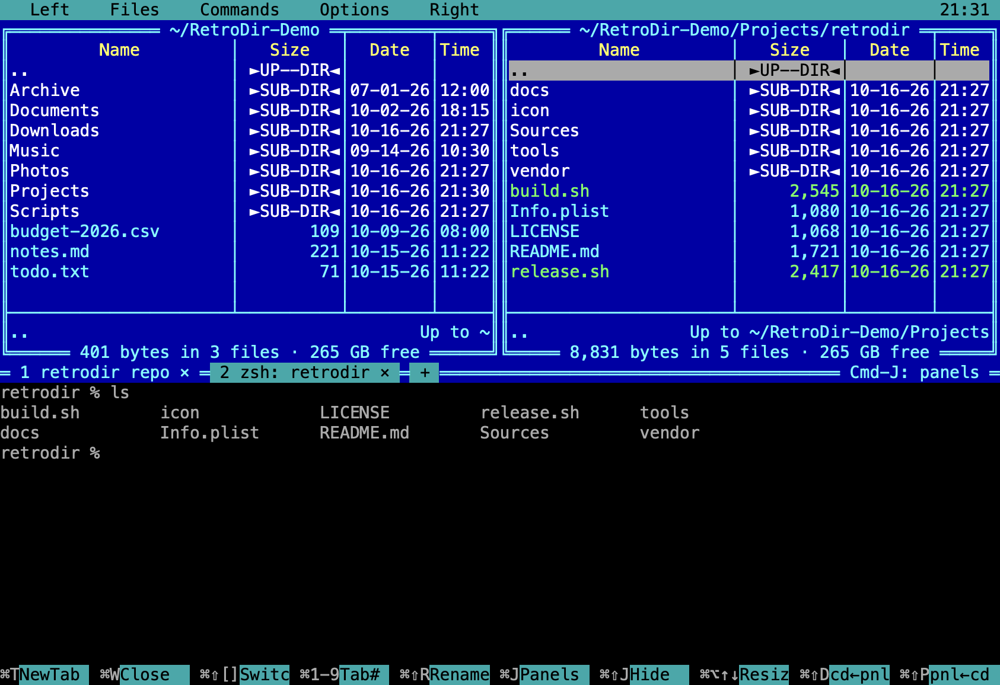
Terminal keys
| Cmd-T | From a panel: open the terminal in that panel's folder. In the terminal: new tab |
| Cmd-J | Switch focus between the panels and the terminal |
| Cmd-Shift-J | Hide / show the terminal (sessions keep running) |
| Cmd-W | Close the current tab (closing the last one hides the terminal) |
| Cmd-Shift-[ / Cmd-Shift-] | Previous / next tab (also Ctrl-Tab) |
| Cmd-1…Cmd-9 | Go to tab N (while the terminal is focused) |
| Cmd-Option-Shift-Left/Right | Move the current tab left / right |
| Cmd-Shift-R | Rename the tab (or double-click it) |
| Cmd-Option-Up/Down | Make the terminal taller / shorter (or drag the tab bar) |
| Cmd-Shift-D | cd the terminal to the active panel's folder |
| Cmd-Shift-P | Move the active panel to the terminal's folder |
| Cmd-K | Clear the terminal screen |
| Cmd-C / Cmd-V | Copy the selection / paste |
| Ctrl-Enter (in panels) | Type the path of the file under the cursor into the shell |
While the terminal is open, typing in the panels goes straight to the shell.
15. Themes & settings
The Options menu holds the colour theme, font size (Cmd-+ / Cmd--), hidden files, and the delete and quit confirmations. RetroDir remembers your panels, sort order, histories, hotlist, theme and terminal size; Save setup (Shift-F9) saves them right away.
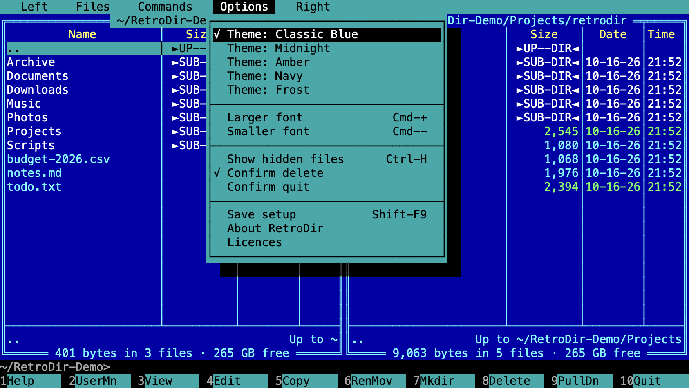


16. Help & licences
F1 shows the complete keyboard reference inside the app. Options → About RetroDir shows the version and disclaimer, and Options → Licences shows the full MIT licence texts for RetroDir and SwiftTerm.
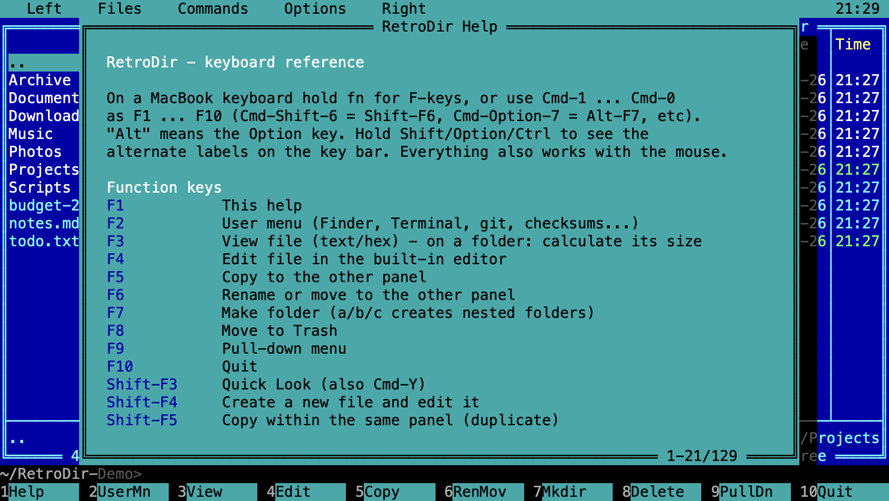
17. Keyboard reference
The function keys at a glance. Every other shortcut is in the section for its feature above.
| Key | Plain | Shift | Alt (Option) |
|---|---|---|---|
| F1 | Help | Left panel: volume / place | |
| F2 | User menu | Right panel: volume / place | |
| F3 | View (folder: size) | Quick Look | |
| F4 | Edit | New file | Open with default app |
| F5 | Copy | Duplicate | Pack |
| F6 | Rename / move | Rename in place | Unpack |
| F7 | Make folder | Find files | |
| F8 | Move to Trash | Delete permanently | Command history |
| F9 | Pull-down menu | Save setup | |
| F10 | Quit | Folder hotlist | |
| F12 | Folder history |
With Ctrl: Ctrl-F3…Ctrl-F7 sort by name, extension, time, size or unsorted, and Ctrl-F9 reverses the order.